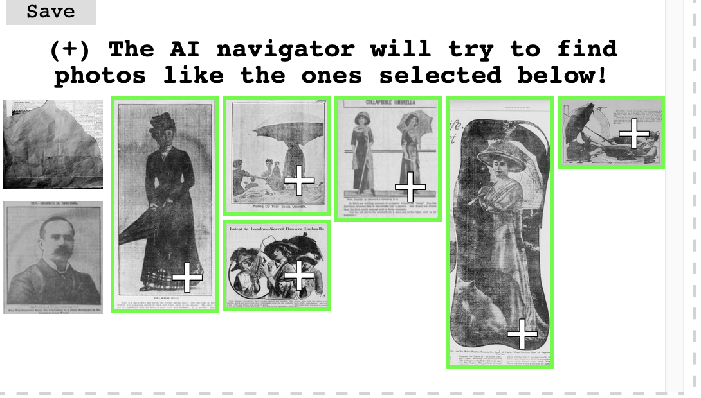
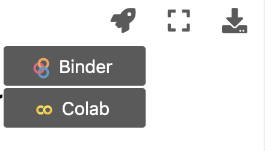

Introduction¶
Machine Learning is of increasing interest to people working in and with Gallery, Library, Archive and Museum (GLAM) collections.
A particular area of interest for GLAM institutions is using machine learning to produce metadata. Growing amounts of digitised material offer both the possibility, desire, and potential necessity of using machine learning methods to create metadata.
There may also be a desire to use Machine learning to produce more niche or bespoke facets for filtering collections. The metadata GLAMs currently hold for their collections don’t always match the interests of the users of collections, and machine learning may make the process of creating these new facets more feasible. Benjamin Lee in the Newspaper Navigator project offers an example of this type of faceted search through Machine Learning. Ben’s search app allows users to create new facets for searching the collection using machine learning.

Working with extensive collections of digitised materials often requires new metadata to help ‘slice’ a collection. This Jupyterbook contains a series of Jupyter notebooks that show some of the possible steps in creating a machine learning model for doing what we have called crude ‘genre classification’. The ‘metadata’ our machine learning model produces is a label indicating whether a particular book title is ‘fiction’ or ‘non-fiction’. In the next section, we explain this task and the data we use in more detail.
Aims¶
This Jupyter Book has a few main aims:
to (partially) document the steps taken to produce new metadata for the Microsoft Digitised Books collection with predicted genre labels. Whilst we would in no way claim that this is a fully reproducible pipeline for creating our genre classification models, we hope it does cover all of the significant steps in the process we used.
to give some background on the motivations and the requirements machine learning model should meet
to give an overview of a ‘pragmatic’ approach to this task
We are keen that this ‘book’ offers a resource for others to pursue similar projects. We try and focus on the broader considerations of using machine learning with GLAM data beyond the process of creating a model. In particular, there is a focus on the steps before and after training the model.
What is Covered? (tl;dr)¶
You can find a complete content outline in the left sidebar of the Jupyterbook. We’ve pulled out some of the topics covered to help you jump into a specific section of interest.
Chapter(s) |
Topics covered |
|---|---|
Looks at how well digitised books represent the wider universe of books held by the British Library. It also explores the training data compared to the full digitised collection of books. |
|
Explores some possible ways in which we can assess where a model is making mistakes, and in particular, where these errors might be systematic. This section also explores some possible ways you can assess whether to use a subset of a models predictions |
|
Looks at how we can use domain knowledge and labelling functions to create training data without having to hand annotate data. |
|
Explores possible considerations around sharing models and other components of a machine learning pipeline with others. |
Prerequisites¶
While this Jupyter Book aims to serve as a tutorial of sorts, it does not strive to be entirely comprehensive. In particular, we won’t teach you the Python programming language, which we use to develop our models. We also assume some familiarity with the overall process of creating a machine learning model.
However, our aim in this ‘book’ is also to provide an overview of the steps involved. Sections of this book include code. However, we accompany these sections with text explanations of what we’re doing and why so following all the code isn’t necessary.
If you do want to follow everything related to the Python code in these notebooks, it would be good to have some familiarity with:
the syntax of the Python programming language
how to use pip to install external packages
how to import Python external packages
We hope that this background isn’t required to follow the overall logic of tackling this problem.
Non Prerequisites¶
Machine learning has a reputation for requiring extensive computational resources, particularly when training models. There is also an unfortunate trend of some gatekeeping around using these methods. This gatekeeping is sometimes justified by claiming that anyone using machine learning must also be conversant with - and have access to - extensive cloud compute resources.
One constraint set on this work is limiting the type of resources we used for this work. Whilst the Living with Machines project is spending large amounts of money on cloud computing, this work did not leverage this and instead relied on Google Colab (more on this below). Avoiding cloud computing was done to try and demonstrate that developing practical ML models doesn’t require a large compute budget (something many GLAM institutions won’t have).
How to Run the Code?¶
You can choose to read through the notebook in this book via the Jupyterbook interface, or you may want to run it interactively so you can inspect the outputs and change the code. The notebooks are all intended to be ‘stand alone’, i.e. all of the input data files are downloaded for each notebook, so you don’t need to run the notebook in order on the same file system.
Using Google Colab¶
Jupyterbook provides a launch button which you can choose to open a notebook in Google Colab or Binder Hub. Colab is a hosted notebook service provided by Google.
{kind=link}
We recommend for the majority of these notebooks using Colab since Colab notebooks also offer a GPU version. Clicking on the rocket icon will show you two launch options, one for Binder and one for Colab. Once you have clicked on the Colab notebook, you should have a version of the notebook section you are looking at opened inside Colab.
For the notebooks which involve training deep learning models, you should ensure you have GPU acceleration for your Colab notebook. You can activate this by navigating to the Runtime dropdown menu in Colab and selecting change runtime type.
{kind=link}
Once you have done this, you should select GPU under the hardware acceleration options.
{kind=link}
Note
Because we are using Jupyterbook to render this material, you may see some markdown syntax in the notebooks which you might not be familiar with. This is used by Jupyterbooks to generate content differently but doesn’t impact how the notebook runs.
If you haven’t run across Colab before this video gives a very quick introduction to the platform.
How to Give Feedback?¶
This series of notebooks is a work in progress, and we will update and add to this material over time. As discussed earlier, we aim to share the steps we took in this project. Although we have tried to keep an external audience in mind, we may have taken things for granted that might be obvious to us but not to someone coming to this material/project with fresh eyes.
We would love feedback on areas where things are unclear (or where we could do better). The easiest way to provide this feedback is to open an issue on the GitHub repository for this book.